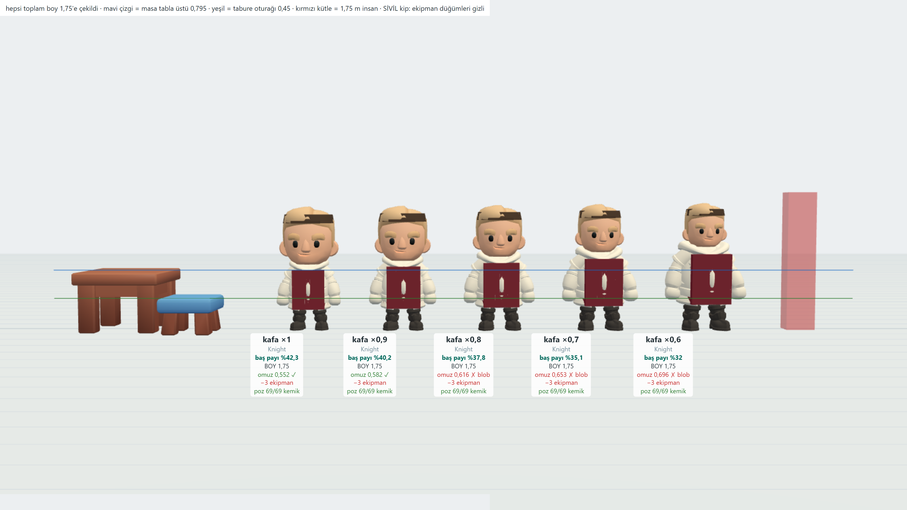
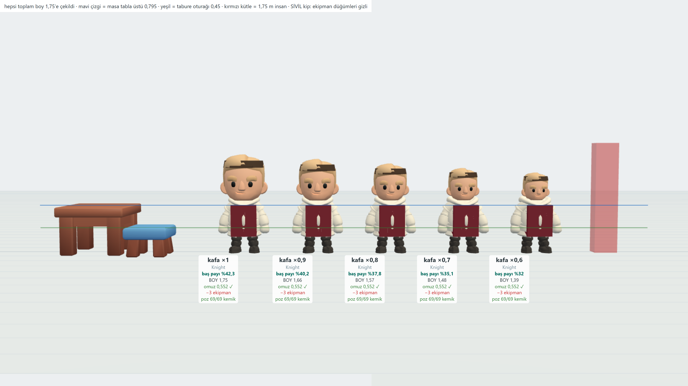
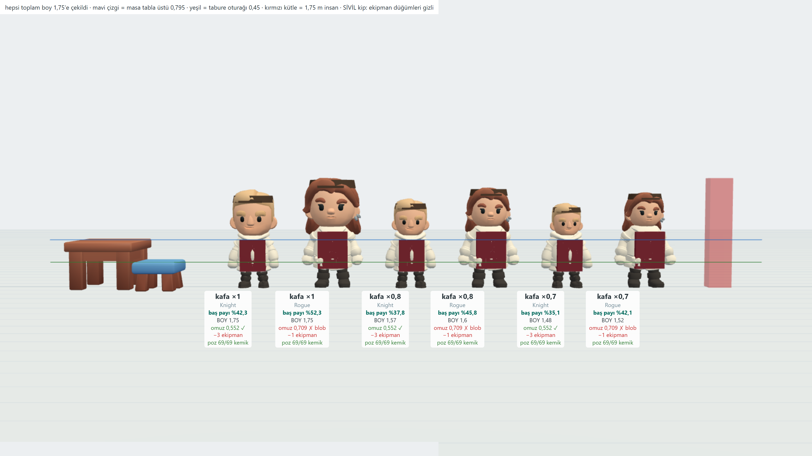
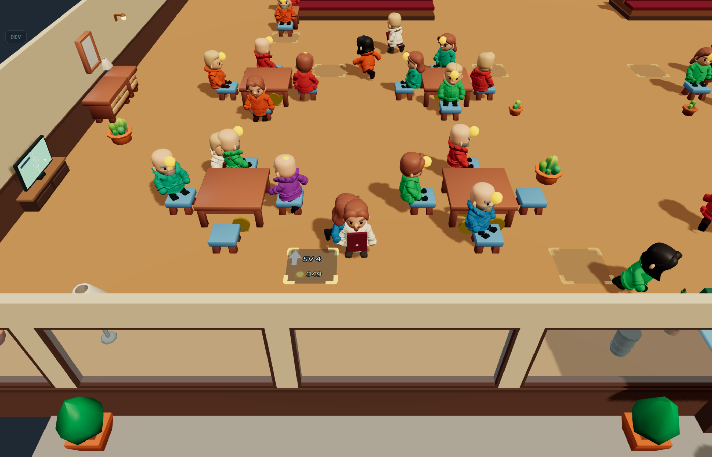
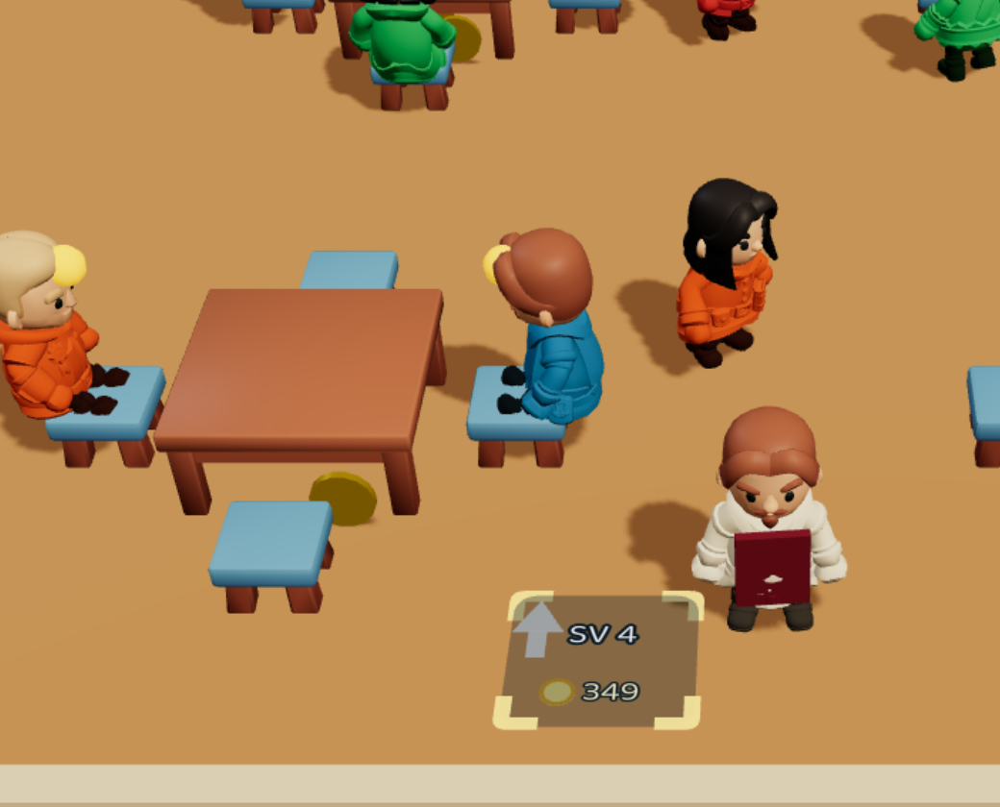

Üç görsel geri bildirimin sayısı çıktı, dört kol seçildi ve kodlandı. Ölçülen rakamlar, seçilen kollar ve oyun içi sonuç.
“Havada süzülüyor gibi” — klip hangi hız için çizilmiş, karakter hangi hızda gidiyor?
Bir yürüme klibi belli bir yer hızı için çizilir: basılı ayak, gövde sabitken geriye kayar. O kaymanın uzunluğu, karakterin o döngüde gitmesi gereken yoldur. Klipleri dosyadan örnekleyip ölçtüm — beşinde de kök kayması sıfır, yani klipler “yerinde”, senkronlamanın önünde engel yok.
| klip | süre | döngü yolu | yazılı hız | kadans |
|---|---|---|---|---|
| Walking_A bugün | 1,067 sn | 0,766 | 0,571 br/sn | 1,87 |
| Walking_B | 1,067 sn | 0,880 | 0,655 br/sn | 1,87 |
| Running_A | 0,800 sn | 1,257 | 1,247 br/sn | 2,50 |
| Running_B | 0,800 sn | 1,264 | 1,254 br/sn | 2,50 |
Gerçek hız ÷ klibin yazılı hızı. 1,0 = kayma yok. Siyah çizgi, klibi hızlandırarak gidilebilecek sınır (sprint kadansı 4,5 adım/sn).
Personel ve müşteride süzülme tamamen biter. Running_A’ya geçip hıza bağlı timeScale verilince katsayı 1,20–2,25 arasında kalıyor, oluşan kadans 3,0–5,6 adım/sn — gerçek koşu bandı.
Oyuncuda bitmez. Hızı (4,5–5,4 br/sn) klibin taşıyabileceğinin iki katı. Sprint kadansına kelepçelenirse klip 2,24 br/sn taşır, 2,0× artık kayma kalır — bugünkü 7,9×’ın dörtte biri. Sıfırlamanın tek yolu oyuncu hızını düşürmek; o economy.config.ts’e dokunur, varyant kapısına tabidir ve bu turda ölçülmedi.
Klip seçimi + hıza bağlı timeScale + sprint kelepçesi. Yavaş giden yürür, hızlı giden koşar; katsayı hızdan türer, tavan 1,80’de durur. Personel ve müşteri birebir senkron olur, oyuncuda kayma 7,9× → 2,0×’a iner.
Oyuncu hızını düşürme kolu kendi turuna yazılır — denge sayısı, ölçülmeden dokunulmaz.
“Kafalar çok büyük duruyo, baya küçült” + “garsonlar falan küçülsün” — ikisi tek kolda buluşuyor.
KayKit başı gövde boyunun %42–52’si. Bugüne kadarki ilkel gövdede %33’tü; gördüğün fark bu. Başı head kemiğinden küçültmenin iki yolu var ve aralarındaki fark bu turun asıl takası.

| kafa | boy | baş payı | omuz | blob sınırı 0,60 |
|---|---|---|---|---|
| ×1,00 bugün | 1,75 | %42,3 | 0,552 | ✓ |
| ×0,90 | 1,75 | %40,2 | 0,582 | ✓ |
| ×0,80 | 1,75 | %37,8 | 0,616 | ✗ aşıyor |
| ×0,70 | 1,75 | %35,1 | 0,653 | ✗ |
| ×0,60 | 1,75 | %32,0 | 0,696 | ✗ |
×0,80’den itibaren D-076’nın blob kuralı kırılıyor — karede kardan adama dönüyorlar.

| kafa | boy | baş payı | omuz | blob sınırı 0,60 |
|---|---|---|---|---|
| ×1,00 bugün | 1,75 | %42,3 | 0,552 | ✓ |
| ×0,90 | 1,66 | %40,2 | 0,552 | ✓ |
| ×0,80 | 1,57 | %37,8 | 0,552 | ✓ |
| ×0,75 ara değer | ~1,52 | ~%36,4 | 0,552 | ✓ |
| ×0,70 | 1,48 | %35,1 | 0,552 | ✓ |
| ×0,60 | 1,39 | %32,0 | 0,552 | ✓ |
Telafisiz kolun mobilya bedeli aritmetik, görsel değil. Gövde ölçeği kıpırdamadığı için bacak, gövde, kalça — ve dolayısıyla masayla, tabureyle, tepsiyle olan ilişkinin tamamı — birebir aynı kalıyor. Aşağıdaki Ö tablosunda “masa yüzdesi yükseliyor” satırı bu koldan geçildiğinde gerçek bir bozulma anlatmıyor: payda kısalan kafadan küçülüyor, mobilya gövdeye göre yerinde duruyor.

Baş payı %42 → ~%36, siluet 1,75 → ~1,52. Omuz kıpırdamıyor, blob kuralı sağlam, mobilya ilişkisi aynı. Tek hamlede iki isteğini birden karşılıyor: kafa küçülüyor ve karakterler küçülüyor.
Daha sert istersen ×0,70 (boy 1,48 · baş %35,1) da ölçüldü ve blob açısından temiz. Ölçek tek sayı — sonradan oynatması ucuz.
ACTOR_HEIGHT 1,75 düşsün mü? — “küçülsün”ün diğer, pahalı okuması.
| boy | masa payı | gerçekten sapma | tabure payı | sapma | SEATED_DROP |
|---|---|---|---|---|---|
| 1,75 bugün, D-076 | %45,4 | +6,0 | %25,7 | 0,0 | −0,45 |
| 1,65 | %48,2 | +12,4 | %27,3 | +6,1 | −0,35 |
| 1,60 | %49,7 | +15,9 | %28,1 | +9,4 | −0,30 |
| 1,50 | %53,0 | +23,7 | %30,0 | +16,7 | −0,20 |
| 1,40 | %56,8 | +32,5 | %32,1 | +25,0 | −0,10 |
K-B’nin aksine burada gövde de küçülüyor, yani bozulma gerçek. 1,75 bugün gerçek orandan %6 sapıyor; 1,60’ta %16, 1,50’de %24. Kendi kuralın (referans ölçek tuzağı) tam bu yöne karşı: oranı mobilyayı kısarak kovalama. Üstelik bu kol SEATED_DROP, PLAYER_RADIUS, BUBBLE_Y, CAMERA_LOOK_Y ve nav ızgarasını birlikte oynatır.
1,75 kalsın. “Küçülsün” isteğini K-B bedava karşılıyor; boya dokunmak aynı hissi çok daha pahalıya alır ve donmuş mobilya ölçülerini bozar.
Müşteriler de skinned olacak — çizim bedeli ne, düşürülebilir mi?
Gövde başına 6 sivil mesh ama tek materyal — yani parçalar tek çizimde toplanabilir. Üç kolu aynı tarayıcıda, 24 müşteriyle, 120 kare ortalamasıyla ölçtüm.
| kol | ms / kare | çizim | üçgen |
|---|---|---|---|
| instanced kapsül bugün | 0,04 | 1 | 6.240 |
| skinned, 6 parça | 3,44 | 216 | 139.200 |
| skinned, birleşik | 1,01 | 24 | 139.200 |
Birleştirme çizimi 216 → 24’e, kare süresini %71 aşağı çekiyor. Üçgen sayısı değişmiyor — birleştirme çizim çağrısını toplar, geometriyi azaltmaz.
Açık risk: 24 müşteri ≈ 140 bin üçgen demek; bugünkü kapsül 6.240. Masaüstünde (RTX 3060) 1,01 ms, mobilde tipik 4–6 katı. Bu sayı telefonda ölçülmedi — APK turu ister.
Müşteriler skinned’e geçsin, gövdeler tek geometriye kaynatılsın. Gömlek rengi müşteri başına paletten seçilir; Sit_Chair_* klipleri gerçek oturuş pozunu getirir.
Ölçüm yok — kararı verdin, doğrudan uygulamaya gidiyor.
Sahibin kasketi kalkıyor. Tek sorum: mutfak elemanının (ak sakallı usta) kasketi de kalksın mı, yoksa onda kalsın mı? “Ana karakterdeki” dediğin için varsayılanım sadece sahipten kaldırmak.
Rogue’un (bulaşıkçı) omzu 0,709 — blob sınırı 0,60’ı kafa koluna bakmaksızın bugün de aşıyor. S14’ün “omuz 0,58, sınır aşılmıyor” satırı başka gövdeden alınmış. Bu turun kolu değil; ya sınır ya gövde seçimi kendi turunda gözden geçmeli — açık kalemlere yazdım.
Dört kol da onaylandığı gibi kodlandı. Oyun içi kareler — 38 müşteri, hepsi skinned.


Sit_Chair_Idle klibi: kalça taburenin oturağında (kök kaldırma +0,068). Sahibin kasketi kalktı — sağ altta, tepsiyle.| ne değişti | önce | sonra |
|---|---|---|
| oyuncunun ayak kayması | 7,9× | 2,0× |
| garsonun ayak kayması | 2,6× | 1,00× (tam senkron) |
| müşterinin ayak kayması | 4,6× | 1,16× |
| baş payı | %42,3 | ~%36 |
| omuz (blob sınırı 0,60) | 0,552 | 0,552 (değişmedi) |
| müşteri gövdesi | instanced kapsül | 48 yuvalı skinned |
| sahibin kasketi | var | yok |
“Tek materyal → 24 çizim” uygulamada çakıştı: başın dokusunu korumak (yüz ve saç oradan geliyor) tek çizimle bağdaşmıyor. Sevk edilen biçim gövde başına iki mesh — 48 çizim / 0,52 ms, yeniden ölçüldü.
“Personel ve müşteride süzülme tamamen biter” tam doğru değildi: kelepçe 1,80’de durduğu için müşteri (2,6 br/sn) ve bulaşıkçı kademe 2 (2,8) 1,16–1,25× artık kaymayla kalıyor. Garsonda tam sıfır.
Bütçe 24 → 48: oyunda ölçünce 12 masada bile 38 eşzamanlı müşteri çıktı ve tavanı aşanlar kapsül olarak görünüyordu.
Bekçi: tests/karakter-senkron.test.ts — 21 denetim, 18 mutasyonla doğrulandı, kaçan 0. tsc -b ✓ · vitest 964 ✓ · duman 42/42 ✓
Commit: c2d6201 (ölçüm: 93282ae)
Aynı gün iki geri bildirim daha geldi; ikisi de yapıldı.
Kapsül, S15’ten önce müşterilerin çizildiği şeydi: kolsuz-bacaksız-yüzsüz, renkli bir hap şekli. Ucuzdu ama cansızdı. Gerçek karakter pahalı olduğu için bir bütçe var — “en fazla N tanesi gerçek karakter olsun”; bütçeyi aşan müşteri eski kapsüle düşüyordu, yani salonda karakterlerin arasında renkli haplar beliriyordu.
Tavan 48 → 80. 24 masa tam açıkken müşteri 70’i geçebiliyor; 80 o tepenin üstünde kalıyor, yani kapsüle düşme yaşanmaz. Bedeli 1,57 ms/kare. Kapsül kolu yine de silinmedi: tavan bir gün aşılırsa müşteri sessizce kaybolmasın, kapsüle düşsün.
Gerçek hataydı. Yön hareketten türüyordu: müşteri oturunca hareket bitiyor ve geldiği yöne bakakalıyordu. Koltuk masanın çevresinde herhangi bir yönde olabildiği için sabit bir açı işe yaramaz — yön artık koltuktan masa merkezine bakıyor. Ayrıca yuva el değiştirince açı anında oturuyor, yeni müşteri öncekinin yönünden dönerek gelmiyor.
Bekçi: 21 → 23 denetim, 18 → 21 mutasyon, kaçan 0. vitest 966 ✓ · duman 42/42 ✓ · 719296b
Dördü de uygulandı, test edildi ve push’landı.